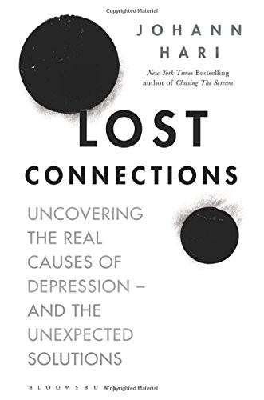
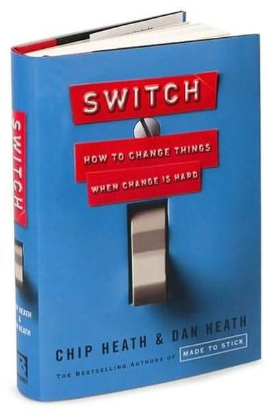
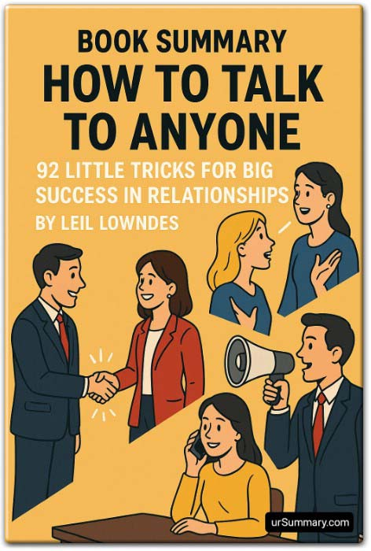
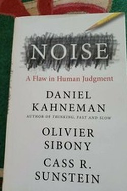
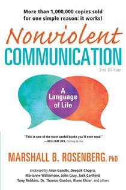

Library › Books like How to Win Friends & Influence People
10 Books Like How to Win Friends & Influence People That Hit the Same Nerve
You finished How to Win Friends & Influence People by Dale Carnegie and want the same energy: You can make more friends in two months by becoming interested in other people than in two years trying to get… Here are 10 more that scratch the same itch, each with a free chapter-by-chapter breakdown, key lessons and action steps on this shelf.
 Give and Take
The most successful people are givers - generous with help, knowledge and credit - who protect themselves from being exploited.
READ THE FREE BREAKDOWN →
Give and Take
The most successful people are givers - generous with help, knowledge and credit - who protect themselves from being exploited.
READ THE FREE BREAKDOWN →

Lost Connections Depression and anxiety are not just broken brain chemistry: they are largely responses to disconnection, from meaningful work, other people, status, nature and a secure future. Nine causes, nine reconnections. READ THE FREE BREAKDOWN → Being Mortal
The goal of care is not only to add years to life but life to years: Gawande's manifesto on mortality and dignity.
READ THE FREE BREAKDOWN →
Being Mortal
The goal of care is not only to add years to life but life to years: Gawande's manifesto on mortality and dignity.
READ THE FREE BREAKDOWN →
 Blink
Gladwell's exploration of thin-slicing: the instant judgments your unconscious makes in two seconds are often brilliant - and sometimes dangerously wrong.
READ THE FREE BREAKDOWN →
Blink
Gladwell's exploration of thin-slicing: the instant judgments your unconscious makes in two seconds are often brilliant - and sometimes dangerously wrong.
READ THE FREE BREAKDOWN →

Decisive Your decisions are sabotaged by four villains - widen your options, reality-test, attain distance, prepare to be wrong. READ THE FREE BREAKDOWN →
How to Talk to Anyone People decide who you are in seconds - and every second is coachable: the smile, the eyes, the posture, the first words. READ THE FREE BREAKDOWN →
Noise Where there is judgment, there is noise; the fix is not better people but better decision hygiene. READ THE FREE BREAKDOWN →
Nonviolent Communication Behind every criticism is an unmet need trying to speak. Learn the OFNR grammar - observe, feel, need, request - and watch arguments dissolve. READ THE FREE BREAKDOWN →Every summary is free: lessons, examples, action steps, audio in your language.